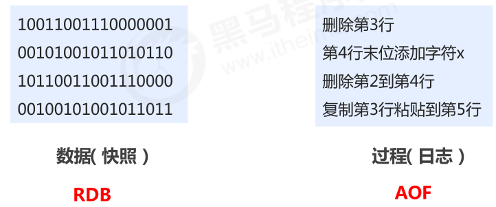
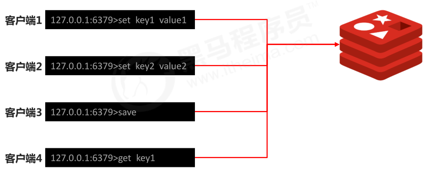
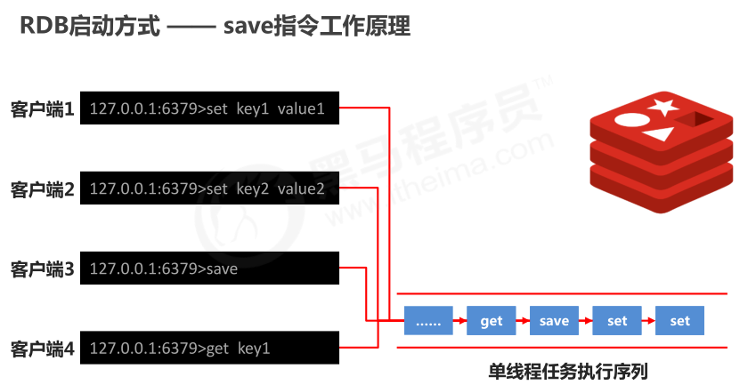
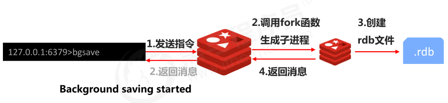
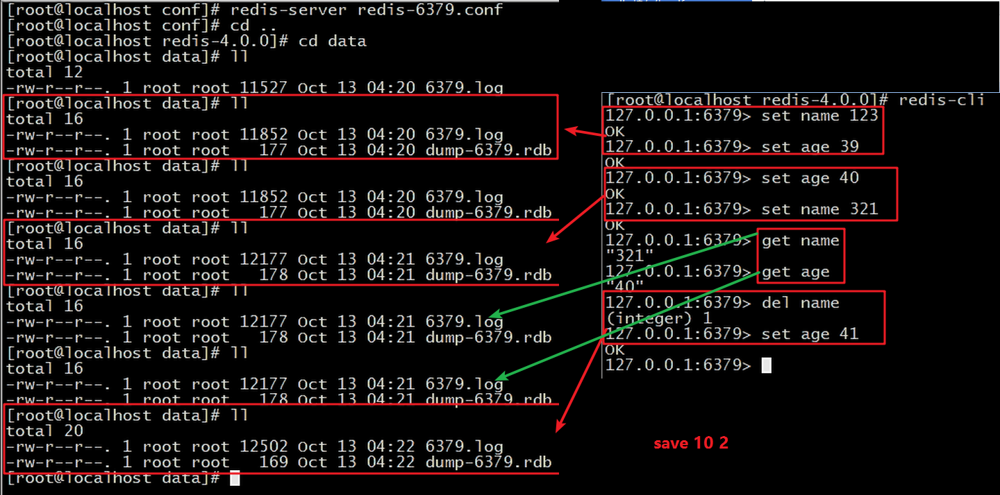
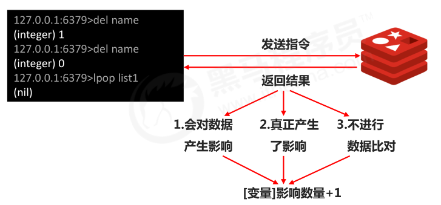
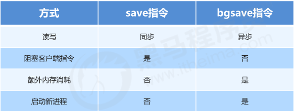

rides的学习与使用
1.Redis 持久化
1-1.持久化简介
什么是持久化
- 利用永久性存储介质将数据进行保存，在特定的时间将保存的数据进行恢复的工作机制称为持久化。
为什么要进行持久化
- 防止数据的意外丢失，确保数据安全性
持久化过程保存什么
- 将当前数据状态进行保存，快照形式，存储数据结果，存储格式简单，关注点在数据
- 将数据的操作过程进行保存，日志形式，存储操作过程，存储格式复杂，关注点在数据的操作过程

1-2.RDB
1.RDB启动方式 —— save指令
作用：手动执行一次保存操作
1 | save |
2.save指令相关配置
- dbfilename dump.rdb
- 说明：设置本地数据库文件名，默认值为 dump.rdb
- 经验：通常设置为dump-端口号.rdb
- dir
- 说明：设置存储.rdb文件的路径
- 经验：通常设置成存储空间较大的目录中，目录名称data
- rdbcompression yes
- 说明：设置存储至本地数据库时是否压缩数据，默认为 yes，采用 LZF 压缩
- 经验：通常默认为开启状态，如果设置为no，可以节省 CPU 运行时间，但会使存储的文件变大（巨大）
- rdbchecksum yes
- 说明：设置是否进行RDB文件格式校验，该校验过程在写文件和读文件过程均进行
- 经验：通常默认为开启状态，如果设置为no，可以节约读写性过程约10%时间消耗，但是存储一定的数据损坏风险
- stop-writes-on-bgsave-error yes
- 说明：后台存储过程中如果出现错误现象，是否停止保存操作
- 经验：通常默认为开启状态
1 | 在conf里改 |
3.save指令工作原理


注意：
- save指令的执行会阻塞当前Redis服务器，直到当前RDB过程完成为止，有可能会造成长时间阻塞，线上环境不建议使用。
数据量过大，单线程执行方式造成效率过低如何处理？
后台执行
- redis操作者（用户）发起指令；redis服务器控制指令执行
- 即时（发起）；合理的时间（执行）
- 保存数据
bgsave指令：手动启动后台保存操作，但不是立即执行
1 | bgsave |
4.bgsave指令工作原理

注意：
- bgsave命令是针对save阻塞问题做的优化。
- Redis内部所有涉及到RDB操作都采用bgsave的方式，save命令可以放弃使用。
5.反复执行保存指令，忘记了怎么办？不知道数据产生了多少变化，何时保存？
自动执行
- 谁：redis服务器发起指令（基于条件）
- 什么时间：满足条件
- 干什么事情：保存数据
save配置
作用：
- 满足限定时间范围内key的变化数量达到指定数量即进行持久化
参数
- second：监控时间范围
- changes：监控key的变化量
位置
- 在conf文件中进行配置
1 | save 900 1 |

- 原理

注意：
- save配置要根据实际业务情况进行设置，频度过高或过低都会出现性能问题，结果可能是灾难性的
- save配置中对于second与changes设置通常具有互补对应关系，尽量不要设置成包含性关系
- save配置启动后执行的是bgsave操作
6.RDB两种启动方式对比

7.rdb特殊启动形式
- 全量复制
- 在主从复制中详细讲解
- 服务器运行过程中重启
1 | debug reload |
- 关闭服务器时指定保存数据
1 | shutdown save |
- 默认情况下执行shutdown命令时，自动执行bgsave(如果没有开启AOF持久化功能)
8.优点和缺点
- RDB优点
- RDB是一个紧凑压缩的二进制文件，存储效率较高
- RDB内部存储的是redis在某个时间点的数据快照，非常适合用于数据备份，全量复制等场景
- RDB恢复数据的速度要比AOF快很多
- 应用：服务器中每X小时执行bgsave备份，并将RDB文件拷贝到远程机器中，用于灾难恢复。
- Rdb缺点
- RDB方式无论是执行指令还是利用配置，无法做到实时持久化，具有较大的可能性丢失数据
- bgsave指令每次运行要执行fork操作创建子进程，要牺牲掉一些性能
- Redis的众多版本中未进行RDB文件格式的版本统一，有可能出现各版本服务之间数据格式无法兼容现象
2.AOF
2-1.RDB存储的弊端
- 存储数据量较大，效率较低
- 基于快照思想，每次读写都是全部数据，当数据量巨大时，效率非常低
- 大数据量下的IO性能较低
- 基于fork创建子进程，内存产生额外消耗
- 宕机带来的数据丢失风险
解决思路
- 不写全数据，仅记录部分数据
- 降低区分数据是否改变的难度，改记录数据为记录操作过程
- 对所有操作均进行记录，排除丢失数据的风险
2-2.AOF概念
- AOF(append only file)持久化：以独立日志的方式记录每次写命令，重启时再重新执行AOF文件中命令达到恢复数据的目的。与RDB相比可以简单描述为改记录数据为记录数据产生的过程
- AOF的主要作用是解决了数据持久化的实时性，目前已经是Redis持久化的主流方式